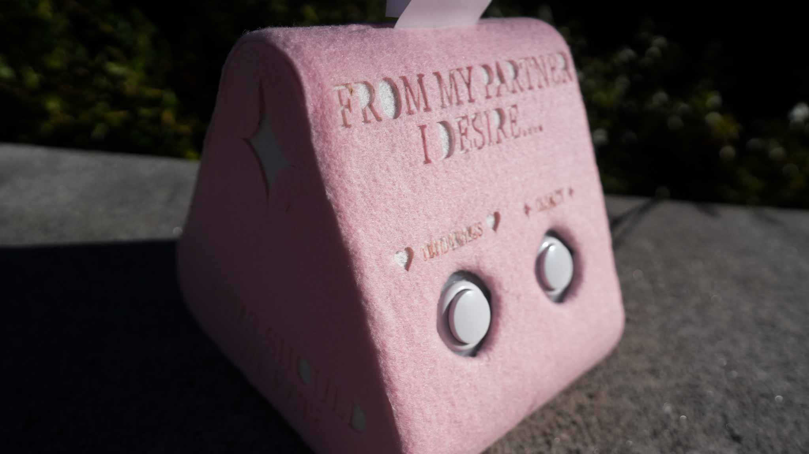
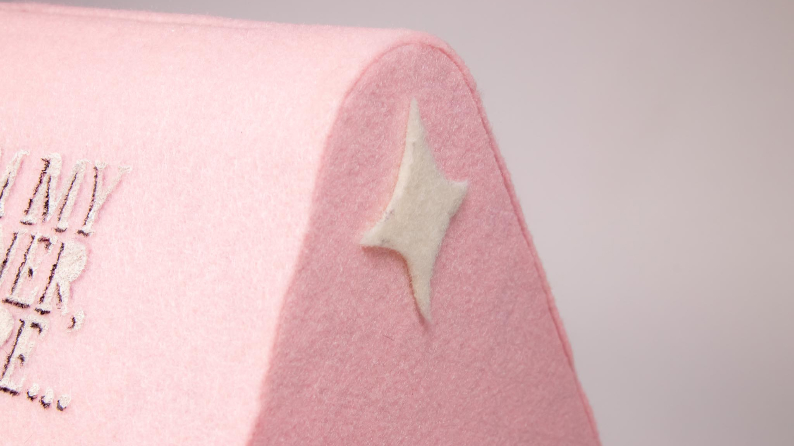

-
What Should We Eat?
Physical Computing
-
A project about people and their relationships with one another, as facilitated through food.
-


-
This device is intended to sit inside of grocery stores and farmers markets, prompting two users to deepen their understandings of one another through a simple question: Do you desire tenderness or clarity from your partner? Once both users have decided, the device will print out a suggestion for a recipe to try, sparking a bit of inspiration and understanding between the two. Food is repositioned as a vessel for understanding and connecting, and a symbol for a relationship that can break out of endless cycles and emotionless habit.
-
Time
Role -
7 weeks
Designer, fabricator, engineer -
- 